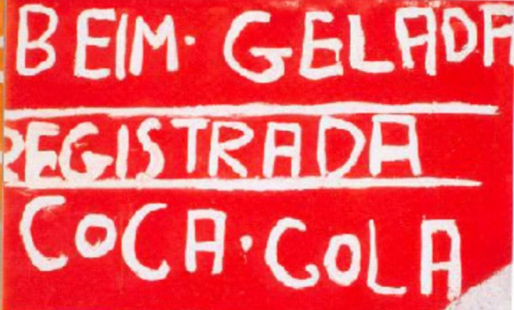
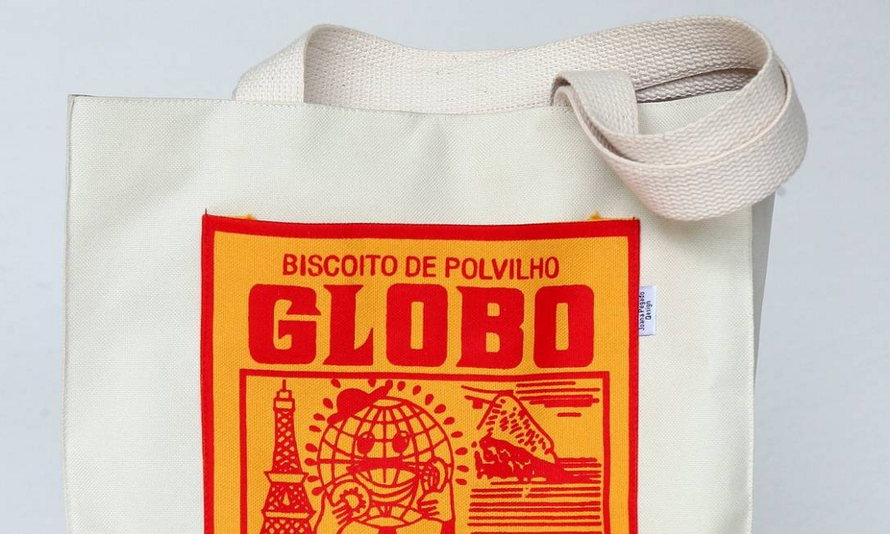
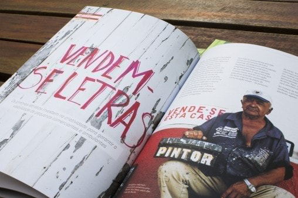

Artigos
Medium
A hibridação do design vernacular para o capitalismo
Desde a pré-história, o homem tem a ânsia de se expressar e comunicar, pode-se ver isso com o registro das pinturas rupestres nas cavernas. A necessidade de comunicação faz com que as pessoas criem formas de expressões pessoais. A falta de recursos e conhecimento incentiva a criatividade livre e espontânea. Segundo Brandes (2009), em 1972, Charles Jencks e Nathan Silver propuseram o termo “Adhocism”, que faz referência à improvisação através dos elementos disponíveis para suprir uma necessidade momentânea. (BRANDES apud IBARRA, 2014, p.6)
Antes mesmo de abordarmos sobre os agentes desenvolvedores, é necessário ponderar a importância do design para todo tipo de negócio. O design é responsável por aspectos técnicos que facilitam a leitura. Por meio da diagramação, é possível direcionar o leitor de forma mais intuitiva, colocando ênfase no que precisa ser informado. Também, através de símbolos e elemento gráficos, a peça transfigura-se de modo mais inteligível. Em alguns casos, pode gerar identificação de forma independente ao texto, como, por exemplo, produtos e marcas aptas de serem reconhecidas apenas por suas logomarcas.
Esses fatores tornam o design extremamente importante para os empreendedores dialogarem com o público.
 A utilização de diferentes elementos de campos diversos no desenvolvimento de um novo produto compreende uma agregação de valor, sendo de fácil identificação e relação com o produto original. Apesar de ser um novo produto, em um outro campo de produção, ele é legitimado por essa ligação com o design de partida.
Ainda usando o Biscoito Globo como exemplo, pode-se ver essa “hibridação” com o uso do design da embalagem empregado em novos produtos que não pertencem a sua linha de produção. Assim, o produto foi reinserido em novos aspectos e praça. Ao lado, na figura, é possível ver o design vernacular descontextualizado do seu ambiente natural e introduzido ao novo ambiente, no caso na capa do cd do Seu Jorge.
São inúmeros os casos de pintores e artistas que ao tentarem comercializar a sua arte foram julgados e criticados, como o caso do Romero Britto. No design vernacular o caminho é inverso, quando pra pintores eruditos o processo de venda é visto como algo medíocre, no design vernacular a critica dessa hibridação gira entorno de um preconceito, onde nenhuma arte de rua pode ser digna de gerar dinheiro. Nas últimas fotos é possível ver a cultura popular sendo valorizada e até mesmo comercializada. O que antes era visto como algo supérfluo e “marginal” agora é resinificado como arte de valor.
A utilização de diferentes elementos de campos diversos no desenvolvimento de um novo produto compreende uma agregação de valor, sendo de fácil identificação e relação com o produto original. Apesar de ser um novo produto, em um outro campo de produção, ele é legitimado por essa ligação com o design de partida.
Ainda usando o Biscoito Globo como exemplo, pode-se ver essa “hibridação” com o uso do design da embalagem empregado em novos produtos que não pertencem a sua linha de produção. Assim, o produto foi reinserido em novos aspectos e praça. Ao lado, na figura, é possível ver o design vernacular descontextualizado do seu ambiente natural e introduzido ao novo ambiente, no caso na capa do cd do Seu Jorge.
São inúmeros os casos de pintores e artistas que ao tentarem comercializar a sua arte foram julgados e criticados, como o caso do Romero Britto. No design vernacular o caminho é inverso, quando pra pintores eruditos o processo de venda é visto como algo medíocre, no design vernacular a critica dessa hibridação gira entorno de um preconceito, onde nenhuma arte de rua pode ser digna de gerar dinheiro. Nas últimas fotos é possível ver a cultura popular sendo valorizada e até mesmo comercializada. O que antes era visto como algo supérfluo e “marginal” agora é resinificado como arte de valor.
Introdução econômica dos agentes desenvolvedores da publicidade vernacular brasiliense
 Os agentes desenvolvedores que manuseiam estes letreiros que estão nas ruas são um público muito variado e, em razão de seus serviços, seus produtos e os preços oferecidos são igualmente diversos. Uma ilustração disto é a disponibilização de cartazes vendendo apartamentos avaliados em quase um milhão e ao mesmo tempo encontramos cartazes vendendo frutas, com seu valor inferior a dez reais. Ou seja, por intermédio dessas faixas de rua é possível não só ter uma larga escala de proprietários, mas também de público, visto que as faixas conseguem se comunicar de forma global, devido a sua linguagem sucinta.
Começando a análise pelo primeiro grupo de proprietários, as pessoas com um poder aquisitivo mais elevado são as que procuram corretores para divulgar os seus imóveis. Para falarmos desse grupo, entramos no quesito regulamentação, assunto esse que será abordado mais detalhadamente à frente. A normatização que vigora em Brasília prevê a proibição de instalações de meios de propaganda em rodovias ou em áreas públicas, com o intuito de preservar a estética urbana, podendo serem recolhidos caso ocorra o descumprimento da norma.
Os agentes desenvolvedores que manuseiam estes letreiros que estão nas ruas são um público muito variado e, em razão de seus serviços, seus produtos e os preços oferecidos são igualmente diversos. Uma ilustração disto é a disponibilização de cartazes vendendo apartamentos avaliados em quase um milhão e ao mesmo tempo encontramos cartazes vendendo frutas, com seu valor inferior a dez reais. Ou seja, por intermédio dessas faixas de rua é possível não só ter uma larga escala de proprietários, mas também de público, visto que as faixas conseguem se comunicar de forma global, devido a sua linguagem sucinta.
Começando a análise pelo primeiro grupo de proprietários, as pessoas com um poder aquisitivo mais elevado são as que procuram corretores para divulgar os seus imóveis. Para falarmos desse grupo, entramos no quesito regulamentação, assunto esse que será abordado mais detalhadamente à frente. A normatização que vigora em Brasília prevê a proibição de instalações de meios de propaganda em rodovias ou em áreas públicas, com o intuito de preservar a estética urbana, podendo serem recolhidos caso ocorra o descumprimento da norma.
O segundo grupo de proprietários são as grandes empresas, como supermercados, que colocam as faixas com o valor dos seus produtos. Mas, se pararmos para pensar no poder aquisitivo dessas empresas que conseguem produzir comerciais e divulgá-los em horários nobres, por que elas utilizam as faixas? Por duas razões: abrangência do público alvo e promoções dinâmicas. O público que as faixas podem atingir inclui as pessoas que estão trafegando perto do comércio e possíveis compradores. E, pelo fato de suas promoções serem muito dinâmicas, as faixas permitem essa alternação por serem fáceis e rápidas de serem posicionadas.
O terceiro e último grupo é o de proprietários da maior parte das faixas que estão em áreas públicas. Ele é composto por microempreendedores e vendedores ambulantes, que desenvolvem formas de expressão individuais, em decorrência da necessidade. Quando falamos deste último grupo, é importante citar que o design vernacular foi fundado por eles, além de serem o grupo com menor poder aquisitivo dentre os três últimos. No Brasil, existem 6,4 milhões de estabelecimentos. Desse total, 99% são micro e pequenas empresas-MPE (IBGE, 2013). Segundo estatísticas do Instituto Brasileiro de Geografia e Estatística (IBGE, 2017),
39,8% das empresas fecham após 5 anos de operação. Pensando neste público, é financeiramente incompensável que invistam em publicidade, quando a maioria é economicamente instável. Consideramos também os prestadores de serviço dentro da categoria de microempreendedores.
Os vendedores ambulantes, assim como os microempreendedores, optam por este tipo de propaganda pela necessidade. A maioria vende produtos de custo baixo, sobretudo abaixo do valor médio de uma propaganda, o que torna inviável pagar por uma peça gráfica regularizada. Vamos exemplificar, um feirante ganha em média R$ 1.318,06 mensal, pesquisa do Salário junto a dados oficiais do CAGED (2020). Uma propaganda de rua, para ser desenvolvida tem o custo médio de 600 reais (ADEGRAF, 2019–2020, p. 14), a produção e o material custam em média 200 reais. No final, o produto tem um custo mínimo de 800 reais,
sem contar o valor de locação de um espaço para anunciar. O valor mínimo de 800 reais é mais da metade do salário de um feirante. Então a maioria acaba escolhendo o caminho das plaquinhas de rua, tanto pela facilidade quanto pela acessibilidade.
Maxuel da Silva, vendedor de frutas, com uma barraca localizada na EPIA, em frente ao Noroeste, foi questionado o porquê de não investir em um layout elaborado para a divulgação dos seus produtos. Ele afirmou, “Não compensa, a gente, já tem gasto suficiente com essas de pano, que temos que comprar quase todo dia, porque a AGEFIS leva. Esse é o jeito que a gente arruma de divulgar”.O único jeito de reduzir os gastos tornando viável para esses microempreendedores e vendedores ambulantes pagarem por uma propaganda, seria cortando o maior custo da produção gráfica, o desenvolvimento do layout. Mas, para isso, o próprio feirante teria que produzi-lo, sem um conhecimento prévio sobre publicidade, propaganda e design gráfico, eles acabam não saindo do comum, pois não são incentivados a fazer isso. Quanto maior o estímulo, maior será a probabilidade que a criatividade se desenvolva e frutifique na mesma proporção, consequentemente afetando o modo de produzir o design. Também é provável que quanto mais alta a classe social, maior será esse estimulo e a facilidade ao acesso a recursos, conhecimento e produção que a pessoa terá. É possível notar isso pelo diferente modo que as classes mais altas e baixas se comunicam. É neste ponto que a democratização do design entra. A intenção não é só dar preços acessíveis para que as pessoas possam comprar o design, mas dar acesso ao conhecimento para que elas possam produzir seus próprios designs.